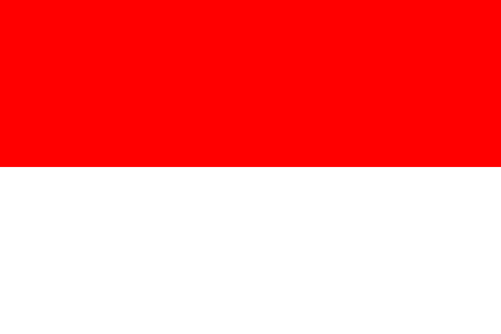
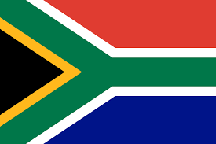
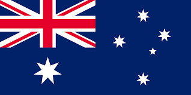
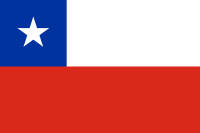
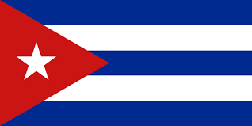

FRANCIA
FRANCIA
 INGLATERRA
INGLATERRA
 ESPAÑA
ESPAÑA
China CHINA
China es una nación muy poblada de Asia Oriental cuyos vastos paisajes abarcan praderas, desiertos, montañas, lagos, ríos y más de 14,000 km de costa. La capital, Pekín, mezcla la arquitectura moderna con los sitios históricos como el complejo del palacio de la Ciudad Prohibida y la plaza de Tiananmén. Shanghái es un centro financiero global adornado con rascacielos. La icónica Gran Muralla China recorre el norte del país de este a oeste.

Japon JAPON
Japón (en japonés: 日本, Nihonⓘ, formalmente 日本国, Nippon-koku), es un país insular de Asia Oriental ubicado en el noroeste del océano Pacífico. Limita con el mar del Japón al oeste y se extiende desde el mar de Ojotsk en el norte hasta el mar de la China Oriental y Taiwán

India
La India (en hindi: भारत, Bhāratⓘ), oficialmente República de la India (भारत गणराज्य, Bhārat Gaṇarājya), es un país soberano ubicado en Asia del Sur. Con un estimado de más de 1428 millones de habitantes, es el país más poblado del mundo
 INDIA
INDIA
Corea del sur
La República de Corea (en coreano: 대한민국, Daehan Mingukⓘ), comúnmente Corea del Sur es un Estado soberano de Asia Oriental, ubicado en la parte sur de la península de Corea. Limita al norte con Corea del Norte, con la cual integró un solo país hasta 1945.
 COREA DEL SUR
COREA DEL SUR
Indonesia
Indonesia, oficialmente la República de Indonesia (en indonesio: Republik Indonesiaⓘ), es un país en el sudeste de Asia y Oceanía entre los océanos Índico y Pacífico. Se compone de más de 17 000 islas, incluidas Sumatra, Java, Célebes y partes de Borneo y Nueva Guinea.
 INDONESIAAfrica
Sudafrica
Uso minoritario, Suráfrica (oficialmente, República de Sudáfrica), es un país soberano, miembro de la Unión Africana, situado en África austral y cuya forma de gobierno es la república parlamentaria. Su territorio está organizado en nueve provincias.
 SUDAFRICANigeria
Nigeria (en inglés: [naɪˈdʒɪəriə]ⓘ), oficialmente República Federal de Nigeria (en inglés Federal Republic of Nigeria), es un país de África occidental, que limita con Níger al norte, con Chad en el nordeste, con Camerún en el este y con Benín en el oeste.
 NIGERIA
NIGERIA
Kenia
Oficialmente la República de Kenia o la República de Kenya (en la ONU; en suajili: Jamhuri ya Kenya; en inglés: Republic of Kenya), es un país del este africano, que tiene fronteras con Etiopía al norte, Somalia al este, Tanzania al sur, Uganda al oeste y Sudán del Sur
 KENIA
KENIA
Marruecos
Se trata de una monarquía constitucional democrática, parlamentaria y social.2 La constitución marroquí define el islam, religión de Estado, y las culturas árabe y amazigh como «componentes fundamentales» de la identidad del pueblo marroquí.
 MARRUECOS
MARRUECOS
Ghana
Oficialmente la República de Ghana (inglés: Republic of Ghana), es un país del oeste de África constituido como una república presidencialista. Limita al norte con Burkina Faso, al este con Togo, al oeste con Costa de Marfil y al sur con el golfo de Guinea.
 GHANA
GHANA
Oceania
Australia
Oficialmente, la Mancomunidad de Australia (en inglés: Commonwealth of Australia, AFI: /ˈkɒmənˌwelθ əv ɒˈstreɪljə/), es un país soberano que comprende la parte continental del continente australiano o Sahul, la isla de Tasmania y numerosas islas menores
 AUSTRALIANueva zelanda
En inglés: New Zealand; en maorí, Aotearoa, «tierra de la gran nube blanca») es un país soberano e insular ubicado en Oceanía, localizado en el suroeste del océano Pacífico, cerca de Australia y constituido en una monarquía parlamentaria

Fiyi
Oficialmente la República de Fiyi (en fiyiano: Matanitu Tugalala o Viti; en inglés: Republic of Fiji; en hindi fiyiano: फ़िजी गणराज्य, Fijī Gaṇarājya), es un país insular de Oceanía ubicado en el océano Pacífico y constituido en una república
 FIYI
FIYI
Palaos
Oficialmente la República de Palau (palauano: Beluu er a Belau, inglés: Republic of Palau), es un país insular, uno de los cuatro que forman Micronesia y uno de los catorce que conforman Oceanía. Su capital es Ngerulmud y su ciudad más poblada es Koror.
 PALAOS
PALAOS
Vanuatu
Oficialmente la República de Vanuatu (en bislama: Ripablik blong Vanuatu; en inglés: Republic of Vanuatu; en francés: République de Vanuatu), es un país insular localizado en el océano Pacífico Sur. El archipiélago, que es de origen volcánico, se ubica a unos 1750 km al este
 VANUATU
VANUATU
Cristobal Colon
Mexico
Estados Unidos Mexicanos,13 es un país soberano ubicado en la parte meridional de América del Norte; su capital y ciudad más poblada es la Ciudad de México.14 De acuerdo con la constitución vigente, su forma de gobierno consiste en una república representativa, democrática, laica y federal, compuesta por 32 entidades federativas (31 estados y la capital)
 MEXICO
MEXICO
Chile
Oficialmente República de Chile, es un país soberano ubicado en el extremo sur de América del Sur. Adopta la forma de gobierno republicana, democrática, unitaria y presidencialista. Su capital y ciudad más poblada es Santiago. Con una longitud de más de 4 300 kilómetros
 CHILEPeru
Oficialmente República del Perú, es un país soberano ubicado en el oeste de América del Sur. Limita al norte, con Ecuador y Colombia; al este, con Brasil y Bolivia; al sur, con Chile; y al oeste, con el océano Pacífico, que bordea su costa.
 PERU
PERU
Canada
AFI: /kanadɔ/ o /kanada/) es un país soberano ubicado en América del Norte, cuya forma de gobierno es la monarquía parlamentaria federal. Su territorio está organizado en diez provincias y tres territorios.
 CANADA
CANADA
Cuba
Oficialmente República de Cuba, es un país soberano insular, asentado en las Antillas del mar Caribe. El territorio está organizado en quince provincias y un municipio especial con La Habana como capital y ciudad más poblada. Cuba es uno de los trece países que forman la América
 CUBA